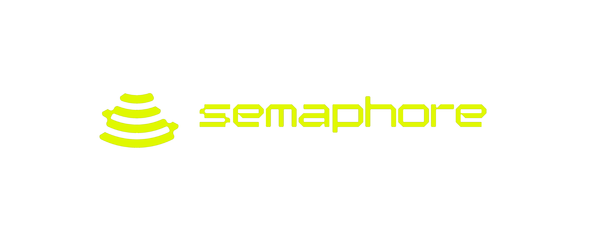
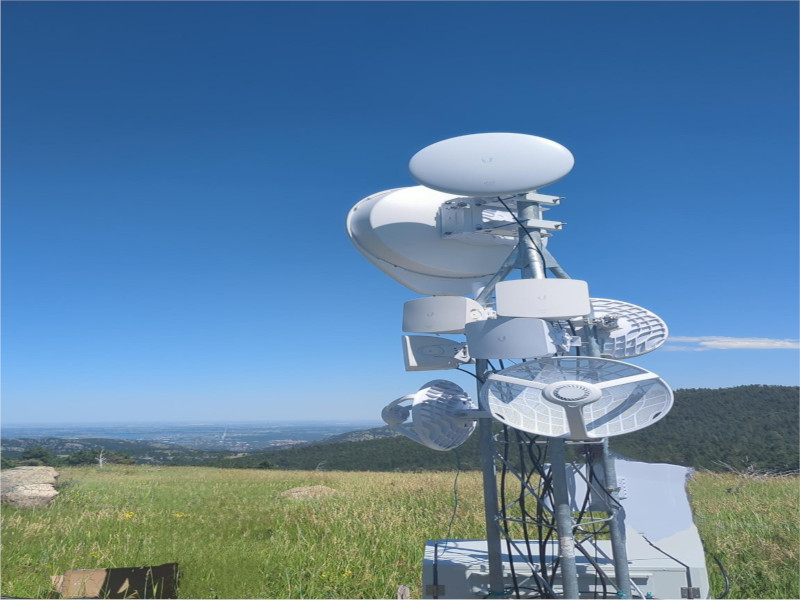

Docs
Wallet
DApp
A Network For
Universal Basic Internet
Take The Yellow Pill Anon.
Host The Network
Deploy FOSS infrastructure in your local community, or the wild! Get Rewarded By the DAO

Learn More
Host DApp
Use The Network
Use Our Network's cellular and WiFi service on almost any phone or laptop; anywhere the DAO is.
Learn More
User DApp
Use The ETHSim Wallet
Learn More
01
02
03
Scroll To Join
Semaphore
Network